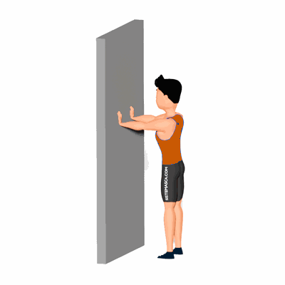

Mobilidade Escapular na Parede

O exercício irá trabalhar a mobilidade das escapulas, auxiliando a trazer movimentos mais livres e com menor intensidade aos ombros para realização de atividades físicas.
Ficha Técnica
Tipo: Mobilidade
Grupo Muscular: Ombro
Aparelho: Nenhum
Músculos: Nenhum
Como realizar
- Em pé, coluna reta e de frente a parede;
- Coloque os braços estendidos a frente e apoie as mãos na parede;
- Com as mãos fixas na parede, inicie o movimento de adução das escapulas, levando as escapulas para atrás;
- Em seguida realize a abdução das escapulas, levando as escapulas para frente;
- Realize as repetições prescritas pelo professor(a), alternando entre adução e abdução.
 RC STORE
RC STORE